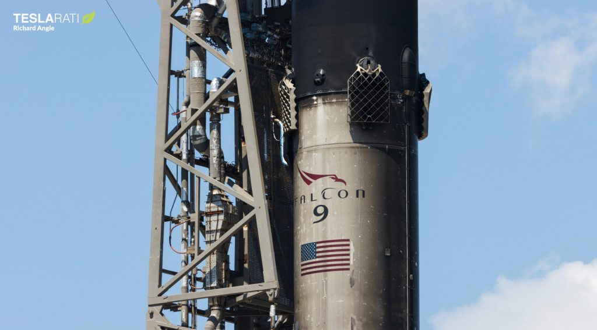

Nilesat 301 lifts off on a Falcon 9 rocket. (Richard Angle)
Nilesat 301 lifts off on a Falcon 9 rocket. (Richard Angle)
Despite a report of a possible technical “issue” just a few minutes before liftoff, SpaceX’s launch team was able to either rapidly rectify the problem or determine it was within an acceptable range of performance, and Falcon 9 ultimately lifted off without issue at 5:04 pm EDT (21:04 UTC), Wednesday, June 8th. Flying for the seventh time overall and sixth time in less than a year, Falcon 9 booster B1062 carried the rocket’s ~100-ton (~220,000 lb) upper stage, payload fairing, and 4-ton (~9,000 lb) Nilesat 301 payload most of the way out of Earth’s atmosphere, where they parted ways about 2.5 minutes after liftoff. While B1062 began its trip back to Earth, Falcon 9’s upper stage ignited, deployed its fairing, and carried Nilesat 301 into an initial parking orbit, where it coasted for twenty minutes before boosting into an elliptical geostationary transfer orbit (GTO) and releasing the satellite.
Scientists release first analysis of rocks
Within a few hours, Nilesat 301 will deploy its solar arrays and begin initial checkouts. If the satellite is healthy, it will use its own onboard propulsion to raise the other end of its elliptical transfer orbit, ultimately arriving in a circular geostationary orbit (GEO) somewhere above northern or central Africa. The communications satellite’s performance will far outmatch the other spacecraft Nilesat has operated, significantly improving the company’s ability to provide customers throughout the region with high-quality TV and communications services.
 Falcon 9 B1062 is pictured shortly before its Nilesat 301 launch. (Richard Angle)After completing its main role in the mission, B1062 touched down dead center on drone ship Just Read The Instructions (JRTI), which was stationed almost 680 kilometers (~421 mi) due East of Cape Canaveral in the Atlantic Ocean. SpaceX also expected to recover Falcon 9’s two new fairing halves, which should have deployed GPS-guided parafoils and gently splashed down on the ocean surface some 822 kilometers (~510 mi) downrange and been fished out of the water by support ship Doug around 45-60 minutes after liftoff. Nilesat 301 was B1062’s seventh launch overall and second launch in just 40 days, making it SpaceX’s second-fastest Falcon booster turnaround ever for a commercial launch. The mission was also SpaceX’s 132nd consecutively successful launch and 49th consecutively successful Falcon booster landing, as well as the company’s 23rd launch in the first 23 weeks of 2022. SpaceX has up to five more launches planned in June 2022, including an oddly secretive Globalstar mission and Starlink launch in mid-June; SARah-1 and rideshare payloads no earlier than (NET) June 18th; and the SES-22 communications satellite and Dragon’s CRS-25 space station cargo delivery NET June 28th.